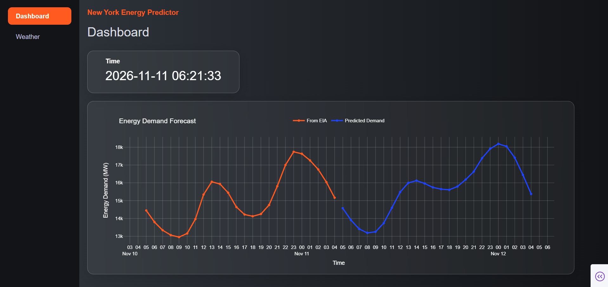
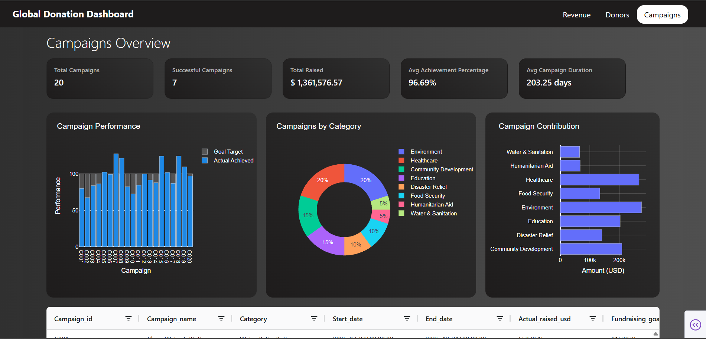
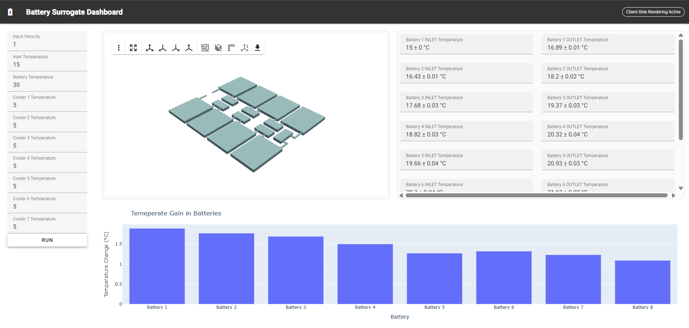
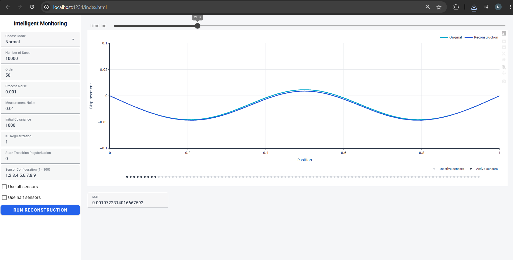

Machine Learning
Predictive modeling, classification, regression, model evaluation, and time-series forecasting.
I'm a mechanical engineer working at the intersection of data science, machine learning, and scientific computing. I enjoy building models and systems that turn complex data into useful insights.
Predictive modeling, classification, regression, model evaluation, and time-series forecasting.
Reduced-order modeling, numerical methods, dynamical systems, and physics-informed approaches.
Data pipelines, Python applications, FastAPI, Docker, and cloud deployment.
Exploratory analysis, interactive dashboards, and communicating technical findings.

A time-series forecasting application exploring electricity demand patterns and multi-horizon prediction using deep learning.
Repository Live Link
An interactive business intelligence dashboard built with Python, Dash, Plotly, and Pandas to analyze international donation revenue, donor behavior, and fundraising campaign performance for a fictional non-profit organization.
Repository Live Link
A physics-informed surrogate modeling framework for an EV battery thermal system.
Repository
This is an interactive dashboard for monitoring and reconstructing powerline vibrations using sparse sensor measurements and Dynamic Mode Decompostion (DMD).
Repository